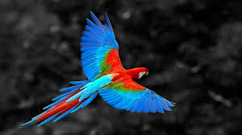
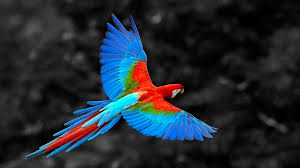

- Phone1: +374 55 90 08 21
- Phone2: +374 77 28 02 71
 

Թութակներ
Հայտնի է թութակների ավելի քան 300 տեսակ: Առավել հանրահայտ են ավստրալական կակադուներն ու ռոզելաները, աֆրիկյան անբաժանները, ամերիկյան արաներն ու ամազոնները: Գունագեղ, կարճ պարանոցով, խոշոր գլխով, կեռ ու հզոր կտուցով թռչուններ են: Ապրում են Աֆրիկայի, Ամերիկայի և Ավստրալիայի արևադարձային անտառներում: Թութակները լինում են տարբեր չափերի: Ալիքավոր թութակի երկարությունն ընդամենը 18 սմ է, իսկ հարավամերիկյան հսկա արա թութակինը՝ մինչև 1 մ: Փետուրները գունավորված են վառ կանաչ, կապույտ, կարմիր, դեղին, հազվադեպ` սև կամ մոխրագույն: Թութակների ոտքերը գերազանց հարմարված են մագլցելուն: Յուրաքանչյուր ոտքի 2 մատներն ուղղված են առաջ, երկուսը՝ հետ, և միասին կազմում են շատ ուժեղ աքցաններ: Թութակների մեծ մասի թևերը լավ են զարգացած, և նրանք արագ են թռչում: Կան նաև չթռչող թութակներ: Օրինակ՝ Նոր Զելանդիայում ապրող բվեճանման թութակը միայն քայլել գիտի և վտանգի դեպքում թաքնվում Է ծառերի արմատների մեջ գտնվող բնում: Թութակները սնվում են պտուղներով, սերմերով, բողբոջներով, երբեմն՝ միջատներով: Նրանք կտուցով ջարդում են բույսերի պտուղների ու սերմերի կեղևն ու սնվում միջուկով: Խոշոր թութակները կարող են ջարդել ամենաամուր ընկույզը: Կտուցը նրանց նաև օգնում է մագլցելու ծառերի ճյուղերով:
Կատուներ
Ընտանի կատուներ կամ պարզապես կատուներ (լատ.՝ Felis catus) մորթավոր, ընտելացված և մսակեր կաթնասուններ, որոնք պատկանում են կատվազգիների ընտանիքին։Կատուներն ընտելացվել են մարդու կողմից մոտ 10.000 տարի առաջ և այժմ համարվում են աշխարհի ամենապոպուլյար ընտանի կենդանիները։ Ենթադրվում է, որ ժամանակակից կատուները ծագել են աֆրիկյան վայրի կատուներից։Սկզբնական շրջանում և մեր օրերում նույնպես, կատուներին պահել են, որպեսզի վերջիններս ազատվեն մկներից։ Ժամանակի ընթացքում, սակայն, կատուներն իրենց լավ են դրսևորում նաև որպես կողակից։Կատվազգիների ընտանիքի մյուս ներկայացուցիչներին (առյուծ, վագր, լեոպարդ, յագուար, լուսան, հեպարդ, պումա) այլ կերպ կարելի է անվանել մեծ կատուներ։ Հյուսիսային Եվրոպայում տարածված են լինքս կոչվող փոքր կատուները, որոնք չեն համարվում ընտանի կենդանիներ։
Թիթեռներ
Թիթեռներ, թեփուկաթևավորներ (Lepidoptera, Linnaeus, 1758, հին հուն․՝ λεπίς-ի սեռական հոլովով՝ λεπίδος՝ թեփուկ և πτερόν՝ թև բառերից), լրիվ կերպարանափոխությամբ զարգացող միջատների կարգ, որի ներկայացուցիչներին բնորոշ է առջևի և հետին թևերի վրա խիտ դասավորված խիտինային թեփուկների առկայությունը։ Տեսակների մեծ մասին բնորոշ է հատուկ մասնագիտացած ծծող տիպի բերանային ապարատը՝ կնճիթիկով, որը ձևավորվել է երկարացած ստորին վերջույթներից։ Թիթեռների ձևերն ու չափերը բազմազան են՝ 2մմ-ից մինչև 28 սմ։Հայաստանում հայտնի է թիթեռների շուրջ 3000 տեսակ, որոնք տարածված են Դիլիջանի, Գուգարքի, Իջևանի, Ստեփանավանի, Գորիսի, Մեղրու, Կապանի անտառներում։ Թիթեռների մեծ մասը վարում են գիշերային կամ մթնշաղային կյանք։Զարգացումն ընթանում է լրիվ կերպարանափոխությամբ՝ կազմված ձու, թրթուր, հարսնյակ և իմագո (հասուն միջատ) փուլերից։ Թրթուրը որդանման է՝ թերզարգացած փորային ոտիկներով, գլխիկի ծածկույթը կարծրացած է, բերանային ապարատը կրծող տիպի է և ունի զույգ մետաքսային գեղձեր, որոնց արտազատած հեղուկը օդի հետ շփվելիս վերածվում է մետաքսի թելիկների[4]։Թեփուկաթևավորների բրածո մնացորդները հայտնաբերվում են սկսած Յուրայի դարաշրջանից։ Ներկայումս թեփուկաթևավորները համարվում են միջատների ամենահարուստ կարգերից մեկը՝ 158000 տեսակով։ Տարածված են բոլոր մայրցամաքներում, բացի Անտարկտիդայից։Միջատաբանության (էնտոմոլոգիայի) այն բաժինը, որը ուսումնասիրում է թիթեռները անվանվում է լեպիդոպտերոլոգիա կամ թիթեռաբանություն։Թիթեռները կարևոր դեր են խաղում բնական էկոհամակարգերում, մասնակցում են փոշոտմանը և սննդային օղակներում ծառայում են որպես սնունդ։ Իսկ գյուղատնտեսության մեջ ունեն բացասական նշանակություն, քանի որ հաճախ թիթեռների թրթուրների սննդի հիմնական աղբյուրը մշակաբույսերն են։ Շատ տեսակների էգը մեկ օրում կարող է ձվադրել 200-600-ից մինչև 30 000 ձու։ Տնտեսական մեծ նշանակություն ունեն նաև մետաքսագործ թիթեռները, որոնցից ստանում են մետաքս։